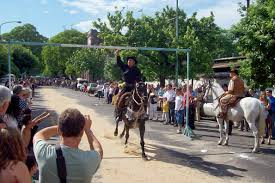
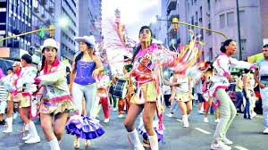
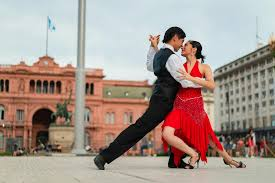
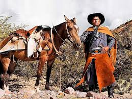

¿En dónde está Argentina?
Empecemos con los básico. Argentina se encuentra en el extremo sur del continente americano, su frontera colinda con Chile, por lo que comparten ciertos paisajes y vistas. Algo que la mayoría sabemos es que se habla español, pero para muchas personas resulta increíble. En Google, una de las búsquedas es “¿qué idioma se habla en Argentina?”. Cabe señalar que Argentina es el segundo país hispanohablante más grande de América Latina.

Historia de Argentina
Resumir la historia de un país resulta casi imposible; sin embargo, vamos a hacerlo lo más posible. Argentina estuvo poblada por diferentes grupos indígenas: en el Noroeste los Incas y los Diaguitas, los Indios Mapuche en el fondo de la Patagonia y que de hecho, fue la única tribu que nunca fue conquistada por los españoles. En el resto de la región grupos de cazadores y pescadores nómadas. Los españoles intentaron conquistar Argentina en múltiples ocasiones, con varios líderes que se adentraron en el territorio como Jerónimo Luís de Cabreara, quien fundó Córdoba en el centro de Argentina en 1537; Pedro del Castillo se estableció en Mendoza en 1561; Juan de Garay se instaló en Buenos Aires en 1580 que ya había sido colonizada por Pedro de Mendoza en 1536, pero debido a los ataques de los nativos y la falta de alimentos partió a España en 1537, muriendo en el camino de regreso.
A finales de 1700, Buenos Aires ya era un puerto destacado en la región, pero estaba fuertemente regulado por la Corona española. Fue atacada por los británicos en 1806 y 1807 cuando éstos percibieron que el imperio español se estaba debilitando, pero cuando los europeos nacidos en Argentina se dieron cuenta de que podían defenderse sin la ayuda de España, iniciaron una revolución por la independencia y que consiguieron el 9 de julio de 1816 bajo el nombre de Provincias Unidas del Río de la Plata. Continuaron luchas internas y externas en el país durante años después, y hubo otra guerra en 1864: La Guerra de la Triple Alianza entre Paraguay y la alianza de Argentina, Brasil y Uruguay. Fue una guerra que duró 6 años y de las más sangrientas de Sudamérica. Argentina fue el país que más rápido se recuperó, lo que dio paso a la unificación, convirtiéndose en el más poderoso y rico del continente durante casi 80 años.
Durante la guerra, los soldados no blancos fueron colocados al frente de batalla, lo que provocó que fueran los primeros en morir. Eran tantos que dejaron pocos descendientes y la mayoría fue tomado como esclavo. A fines de la década de 1870, el general Julio Argentina Roca inició una campaña para masacrar a los nativos en los alrededores de Buenos Aires en nombre de la defensa nacional y la economía, porque según él, robaban ganado y atacaban fuertes por gusto, cuando en realidad, era más por necesidad y falta de alimento. Estas dos políticas genocidas son sensibles para los argentinos.

¿Cuáles son la gastronomía y bebida típicas de Argentina?
Argentina cuenta con una oferta gastronómica variada por sus influencias italianas y españolas, que al incorporarse con las recetas locales dieron pie a deliciosas fusiones y múltiples platillos típicos. Los más característicos del país son determinados por su variedad de carnes, y aunque la carne de res sigue siendo la base de la cocina argentina, en los últimos años su gastronomía se ha orientado hacia los productos locales y a la experimentación en su oferta
Asado: Es sin duda es el plato más típico del país y se prepara a las brazas con diferentes cortes de carne de vaca o cerdo, acompañado de morcillas, chorizos, costillas, entre otras carnes similares. Los asados son más que platillos típicos, sino que son todo un ritual de la cultura argentina.
Chimichurri: La famosa salsa que se usa para acompañar la carne y varios alimentos también es de las ofertas más populares en Argentina, pues es el condimento más elegido de los locales. Se prepara con ajo, orégano, perejil, aceite de oliva, vinagre y chile seco.
Empanadas argentinas: Por supuesto que no puede faltar este platillo de herencia española, que se han convertido en un icono gastronómico gracias a las variaciones y formas de prepararlas en el país. Se ofrecen en múltiples variedades dependiendo de la región de donde provengan, pero la más popular es la de carne que está condimentada con cebolla, huevo y aceitunas. Sin embargo, también hay de pollo, jamón, queso, verduras y hasta de dulces con azúcar, dulce de leche o membrillo.
Provoleta: Es otro platillo característico que se compone de un queso asado que se deriva del provolone italiano. Se sirve como entrada o acompañamiento en los asados. El queso se cubre con otros ingredientes como hojuelas de chile y hierbas, y se asa a la parrilla dejándolo crujiente por fuera y blando por dentro.
Alfajores: Es un dulce tradicional del país que consiste en dos galletas unidas por un relleno de dulce de leche, aunque hay variaciones de frutas, chocolate o algún mousse.
Locro: Es una especie de sopa espesa hecha de maíz, frijoles, papas y calabaza con alguna carne condimentada con diferentes hierbas. La receta varía según la región, pero es un platillo insignia del país que se come sobre todo en el invierno.
Choripán: Es una deliciosa variante de una baguette que se prepara con un chorizo asado a la parrilla y condimentado con chimichurri, así como con otros ingredientes como papas
Mate: Esta bebida es típica del país y es una infusión de hojas de la planta de yerba mate que se toma de forma social. Su origen remonta a la época de los indígenas guaraníes que la utilizaban para rituales o como moneda de cambio entre ellos.
Vino: El vino argentino es reconocido mundialmente, puesto que las principales regiones productoras se localizan en Mendoza, La Salta, San Juan, Catamarca y Córdoba. De hecho, Argentina es el quinto productor mundial, después de Francia, Italia, España y Estados Unidos.
Fernet: Es una bebida llevada a Argentina por los inmigrantes italianos, se ha convertido en una bebida típica para los argentinos. Es común mezclarlo con refresco de cola lo que le da un sabor rico y preferido por los locales.

Deporte
El deporte es una pieza clave de la cultura Argentina. Es común que este país sea reconocido por su gran afición al fútbol, siendo la selección argentina de fútbol masculino una de las más aclamadas por los hinchas. Figuras como Alfredo Di Stéfano, Diego Armando Maradona y Lionel Messi se han sabido posicionar entre los máximos jugadores de la historia de este deporte. El fútbol nacional paraliza al país, sobre todo cuando se juega el superclásico entre River Plate y Boca Juniors.
En cuanto a la fórmula 1, Juan Manuel Fangio logró cinco títulos mundiales en esta disciplina durante la década de los 50, fue la primera persona en marcar este hito. Años más tarde este récord fue superado por el alemán Michael Schumacher. Sin embargo, la fórmula 1 sigue siendo muy seguida en el país y grandes pilotos son de nacionalidad argentina.
Pero, en general, todos los deportes forman parte de la cultura de Argentina, por eso no es de extrañar que alguno de los mejores jugadores de rugby, tenis, básquet y boxeo sean de este territorio. Los argentinos han llegado a alcanzar la máxima línea mundial y han conquistado importantes títulos en el hockey sobre césped, el hockey sobre patines, el polo y el voleibol. De igual forma, los deportes de invierno como el esquí y snowboard están teniendo un crecimiento paulatino.

Lenguas
El idioma castellano es el más hablado por los argentinos, en segundo lugar se encuentra el inglés, seguido del guaraní y el quechua. También se tiene registro de que en algunas partes de Argentina se habla alemán, galés, quechua sureño, lenguas tupí-guaraníes, mapudungun y aimara.
Ahora bien, una particularidad del castellano hablado en Argentina es que cambia la conjugación de la segunda persona del singular. El voseo y el yeísmo son comunes en todo el territorio, una característica que comparte con Uruguay y Paraguay y que ha sido llamada «español austral».
Costumbres y tradiciones de Argentina
Feria de Mataderos: La Feria de Mataderos es una oportunidad para que conozcas la esencia más autóctona de la cultura de Argentina. Esta feria surgió hace más de 30 años y su nombre oficial es Feria de las Artesanías y Tradiciones Populares Argentinas. El lugar donde se celebra es en la Av. Lisandro de la Torre y Av. de los Corrales, en el barrio de Mataderos de la ciudad de Buenos Aires.
En ese sentido, la Feria de Mataderos es perfecta para que comas una exquisita empanada o compres algunos artículos elaborados con cuero. También podrás ver muestras de danzas típicas, carreras de sortijas, conciertos folclóricos de zambas y chacareras. ¡El ritmo frenético que se vive en esta localidad te atrapará!

Festival Nacional de Folklore de Cosquín: Entre el 21 y el 29 de enero de 1961 se llevó a cabo la primera versión del Festival Nacional de Folklore de Cosquín. En la actualidad es el festival más importante de música folclórica de Argentina, cuyo origen se remonta a la novena por la Virgen del Rosario. Este evento tiene una duración de nueve días e inicia en la última semana del mes de enero.
El grito «¡aquí Cosquín, capital nacional del folklore!» anuncia el inicio de este festival que destaca la música folclórica y que ha servido para darle reconocimiento a artistas como Ramona Galarza, Coco Díaz y Bruno Arias. Gracias a la importancia que le otorga a la cultura de América, este festival es patrocinado cada año por la Organización de Estados Americanos (OEA).
Murga: No se sabe con exactitud de dónde proviene la murga, sin embargo, los historiadores coinciden en que ya se realizaba desde la época colonial. La murga es un género músico-teatral que tiene incidencia en países como Chile, Colombia, Canarias, Uruguay y Argentina. También se utiliza este término para referirse a los conjuntos musicales que la practican.
En el caso de la cultura de Argentina, la murga es interpretada durante carnavales; principalmente en la ciudad de Gualeguaychú, donde se festejan los carnavales más importantes de todo el país. Las personas que participan en la murga suelen vestir ropas de coloridas galeras y levita, haciendo una burla a la clase alta del siglo XIX.

Tango: El tango probablemente sea uno de los géneros musicales más hermosos del planeta, también supo revolucionar lo que se conoce como baile popular. Esta danza es muy sensual y parece que los bailarines se dejan llevar por sus emociones a la vez que el ritmo musical marca el movimiento de los danzantes. ¡Es un verdadero espectáculo!
Los temas que toca el tango usualmente son el arrabal, el paso del tiempo, poesía, tristeza y el deseo sexual. Este género musical y danza es tan importante para la cultura mundial que fue señalado como Patrimonio Cultural Inmaterial de la Humanidad (PCI) por la Unesco, luego de que Uruguay y Argentina presentaran una solicitud para que fuese reconocido de esta forma.

Gauchos: La cultura gauchesca de Argentina hace referencia a los campesinos de una determinada zona de este país; aunque también se extiende hasta Uruguay y Paraguay. La figura del gaucho apareció en el siglo XVII cuando se empezó a desarrollar el trabajo rural ganadero. En Argentina, los gauchos están muy extendidos, tanto así que se han encontrado varias formas de expresiones.
Por ejemplo, en Argentina se ha popularizado la literatura gauchesca, cuyo principal representante fue José Hernández con El gaucho Martín Fierro, pero también la música, danza, deportes, artes y una extensa tradición oral. Por otra parte, la gastronomía gauchesca tiene como ingrediente central la carne de ganado vacuno, estas preparaciones son las favoritas de los extranjeros. Los gauchos, tan importantes para la cultura de Argentina, tienen mayor presencia en la región pampeana
